Photography
Concerts, travels, landscapes and a few cats.
All photos © Anaïs Pantzer, 2026. Please do not reuse without permission.
Concerts, travels, landscapes and a few cats.
All photos © Anaïs Pantzer, 2026. Please do not reuse without permission.

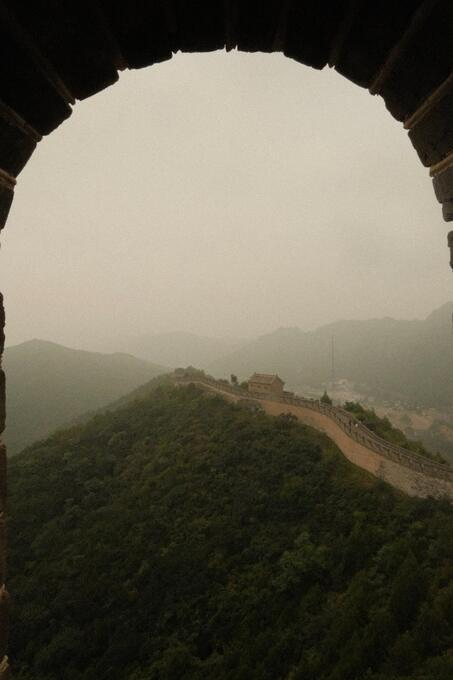


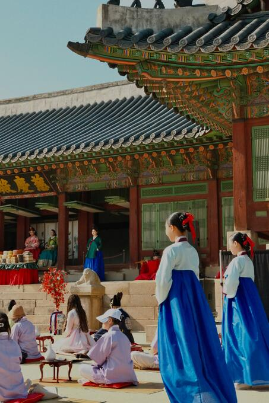
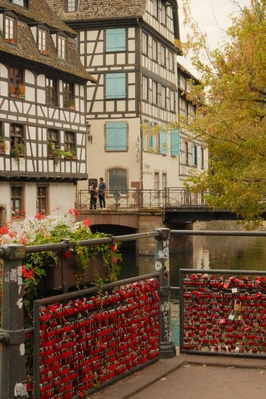

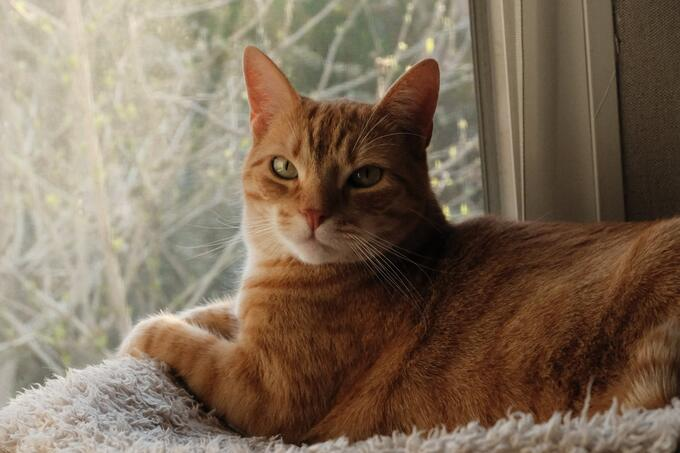


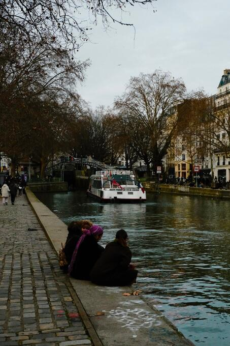


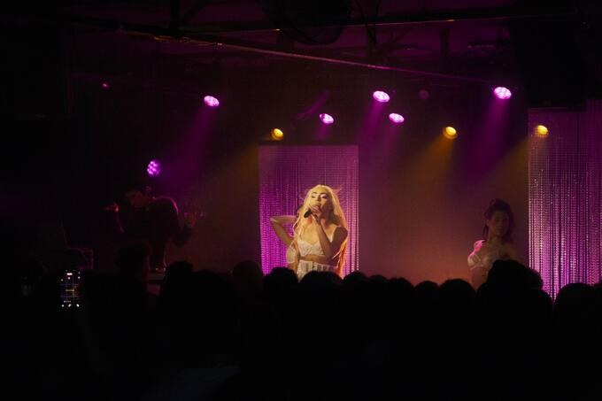

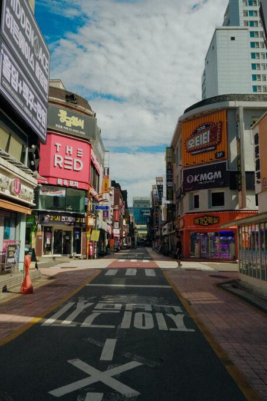
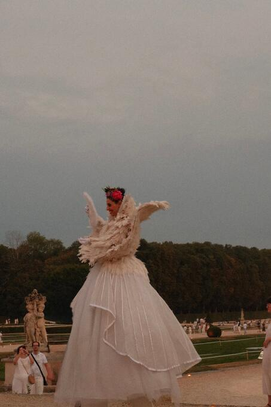

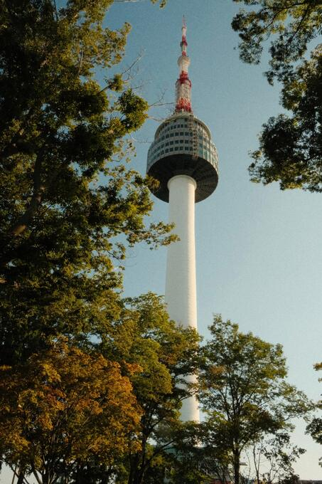
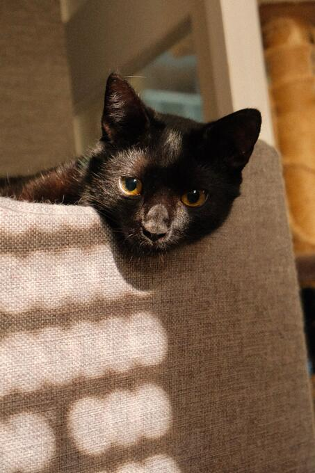


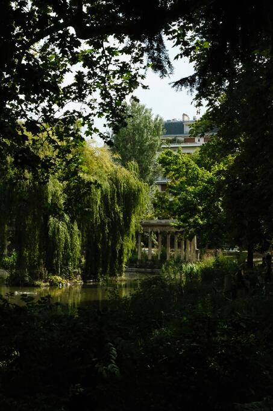
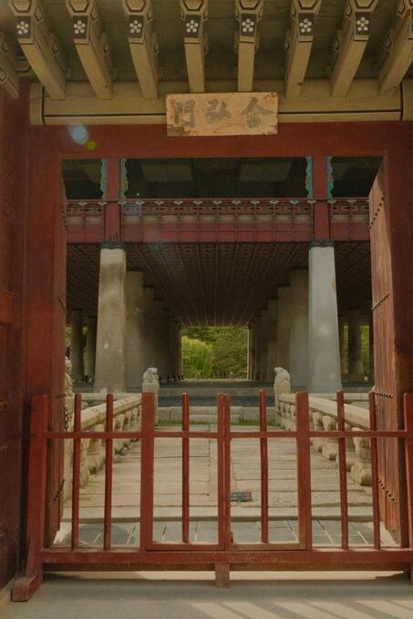
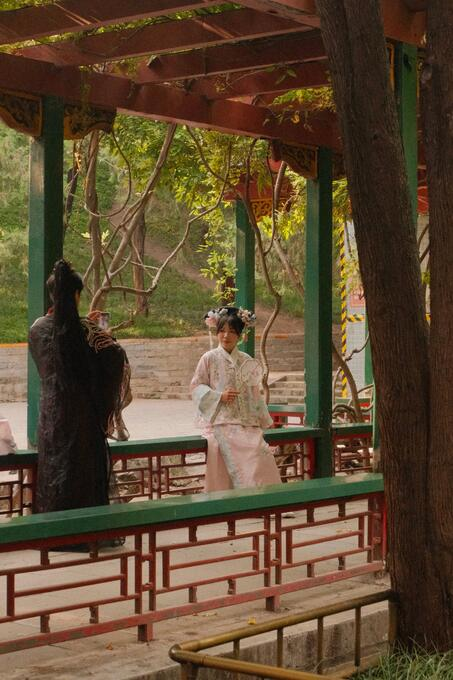
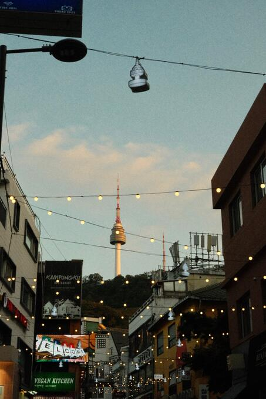
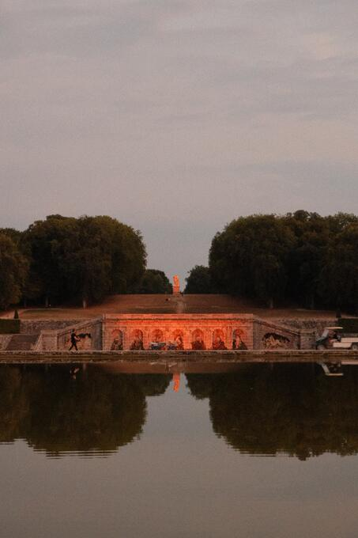
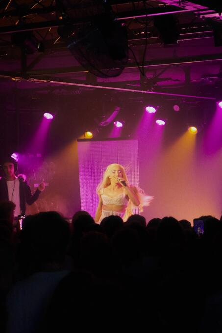
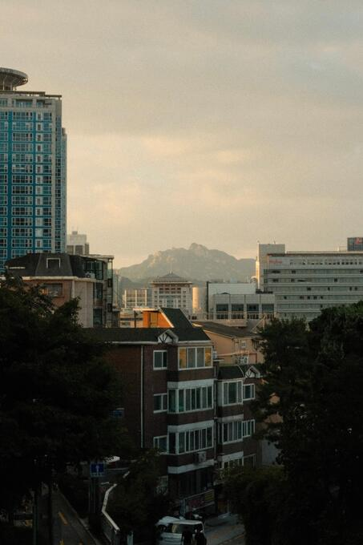
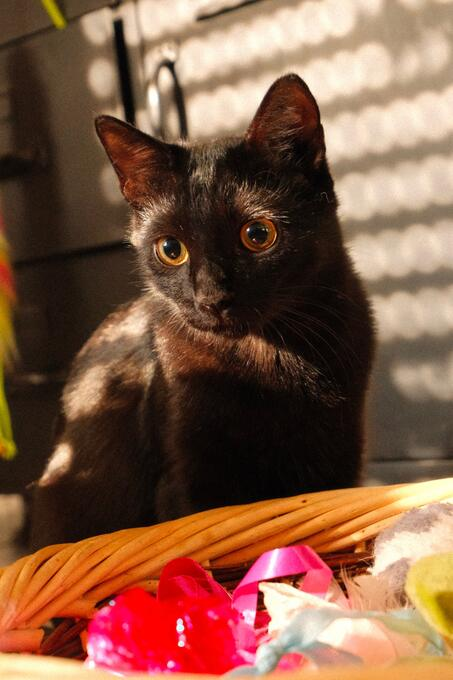
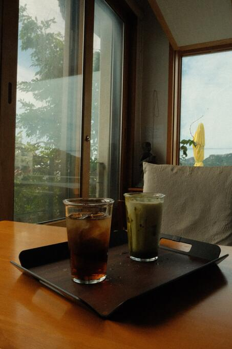
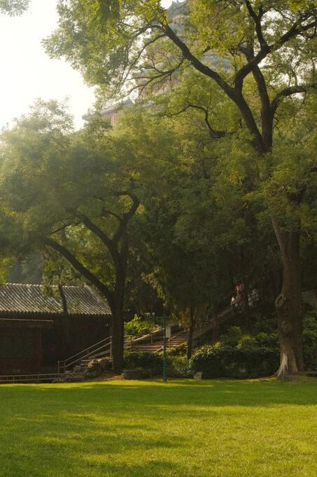
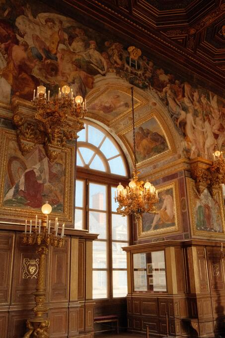
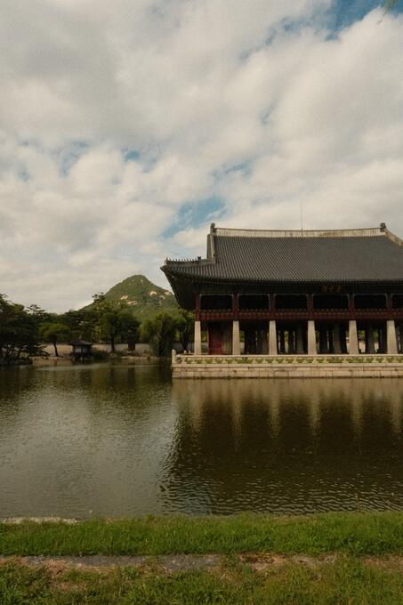

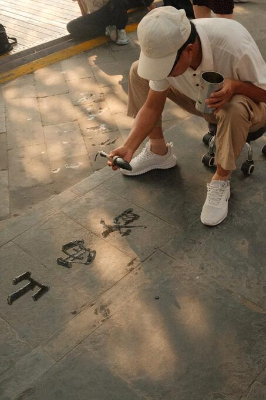
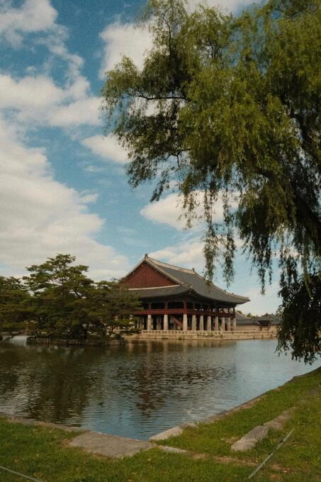


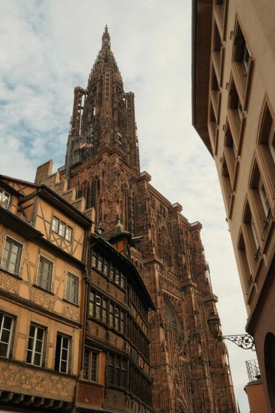

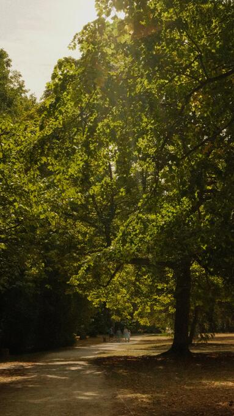